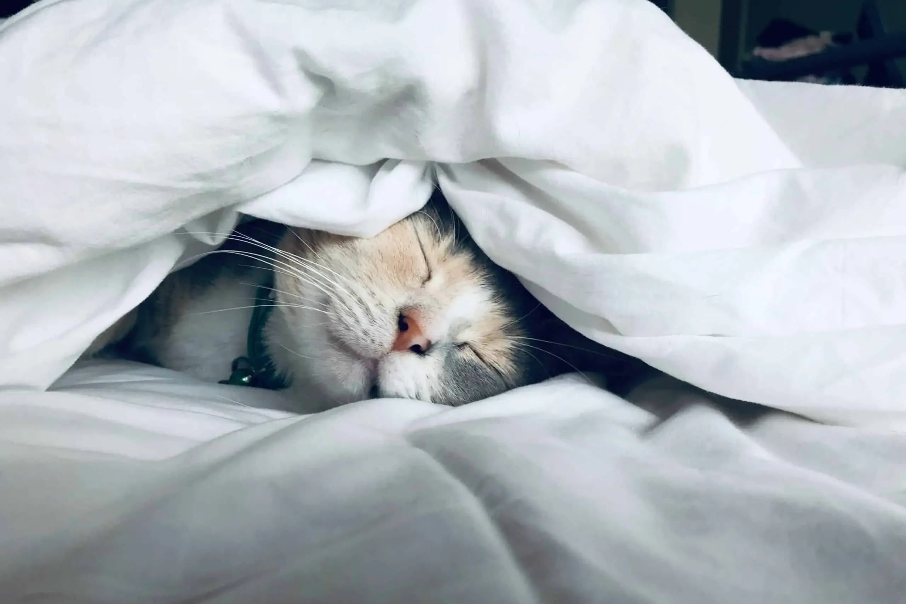
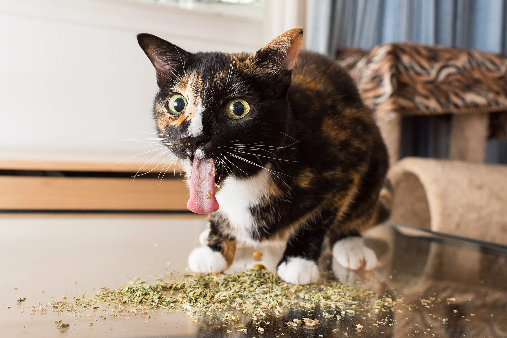

🐾 Join the Feline Fun! 🐾
Sign up for my newsletter to stay in the loop on my latest mischievous adventures. You'll also receive exclusive tips & tricks on coercing your human to give you more treats. No spam, ever.
Latest Posts
-

The Purr-fect Day: A Cat's Guide to Blissful Relaxation
Hello Feline Admirers! Joseph, the maestro of leisure, is back with a special edition—a masterclass on the art of relaxation. Today, I'm letting you in on the secrets of...
-

5 Suprising Health Benefits Of Catnip
Hey, Cool Cats! Joseph here, your resident white fluffball, with some real talk about catnip. Forget the fluff—let's dive into the gritty details of the surprisingly legit health benefits that...
-
How To Get More Treats From Your Human
Greetings, Snack Seekers! Joseph, your fluffy connoisseur of all things feline, is back with the ultimate intel on a cat's true treasure—treats. Forget the fancy pawshakes; it's time for some real talk on how to maximize...